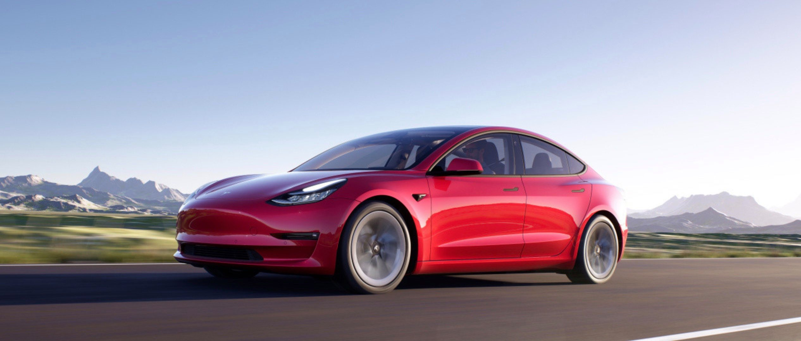

Jakarta - Tesla dikabarkan akan membangun pabrik di Indonesia. Raksasa mobil listrik asal Amerika Serikat itu dirumorkan tengah menjajaki membangun salah satu pabriknya di Indonesia.
Bukan perakitan mobil yang disiapkan Tesla di Indonesia, melainkan untuk kebutuhan produksi baterai mobil listrik. Diberitakan detikcom sebelumnya, Tesla malah sudah menghubungi Kementrian Perindustrian untuk membahas hal tersebut.
Orias Petrus Moedak Direktur Utama MIND ID sebagai holding industri pertambangan Indonesia buka suara soal kabar tersebut. Menurut Orias, pihaknya belum berkomunikasi langsung dengan Tesla. Mungkin, kata dia, Tesla berkomunikasi langsung dengan tim khusus atau dengan menteri terkait.
"Tetapi dari kami MIN ID, kami belum mendapatkan informasi secara langsung apakah mereka (Tesla) tertarik untuk masuk. Tapi yang pasti bahwa mereka bergerak di bidang transportasi kendaraan berbasis baterai itu memang semua kita tahu. Dan saya rasa hal yang wajar bahwa mereka tertarik untuk masuk, tetapi sampai titik ini belum langsung kepada kami," kata Orias dalam rapat dengar pendapat (RDP) sejumlah dirut BUMN dengan Komisi VII DPR RI, Senin (7/12/2020).
Meski belum mendapat informasi langsung dari Tesla, Orias menegaskan pihaknya terbuka kepada Tesla yang ingin membangun pabrik baterai di Indonesia. Dia menilai, jika Tesla langsung berhubungan dengan MIND ID, mungkin akan menguntungkan.
"Karena bagi mereka bisa langsung ke kami mungkin lebih menguntungkan daripada melewati mitra atau perusahaan-perusahaan lain yang tidak memiliki akses lansgung kepada bahan baku baterai," sebut Orias.
Diberitakan sebelumnya, rencana Tesla membangun pabrik di Indonesia masih dalam tahap penjajakan. Menurut Menteri Perindustrian (Menperin) Agus Gumiwang, komunikasi antara pemerintah Indonesia dengan perusahaan milik Elon Musk itu terus berlangsung. Selain itu, Menteri Koordinator Bidang Kemaritiman dan Investasi Jenderal TNI (Purn) Luhut Binsar Pandjaitan juga mengklaim pernah ditelepon oleh pihak Tesla terkait rencana membangun pabrik di Indonesia.
Tesla tertarik membangun pabrik di Indonesia karena Indonesia merupakan negara dengan cadangan Nikel terbesar di dunia. Demikian dikutip dari statista.com. Untuk diketahui, Nikel menjadi bahan utama pembuatan baterai untuk mobil-mobil listrik Tesla.
"Nikel adalah logam dengan kepadatan energi termurah dan tertinggi. Itulah mengapa sebabnya menambah jumlah nikel adalah tujuan kami," kata Wakil Presiden Divisi Mesin dan Rekayasa Energi Tesla, Drew Baglino, beberapa waktu lalu, dikutip dari stockhead.
Sementara itu, saat ini Indonesia sendiri sedang mengembangkan industri baterai electronic vehicle (EV) di Indonesia dari hulu sampai hilir. Sejumlah BUMN akan membentuk Holding Indonesia Battery.
Holding Indonesia Battery sendiri akan berisi tiga perusahaan BUMN raksasa yakni MIND ID atau PT Inalum (Persero) selaku Holding BUMN Pertambangan, PT Pertamina (Persero) selaku Holding BUMN Migas dan PT Perusahaan Listrik Negara (PLN).